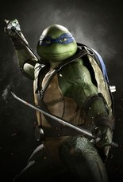

Leader des 4 frères, vivant sous les principes du bushidō.
Il prend toujours au sérieux la pratique du ninjutsu et tente d'encourager ses frères à faire de même, souvent en vain.
Son nom vient de l’artiste et ingénieur de la renaissance Leonardo da Vinci.
Son caractère évolue très peu à travers les différentes versions depuis 1984.
Il porte un bandeau bleu et utilise deux Ninjatōs pour arme.